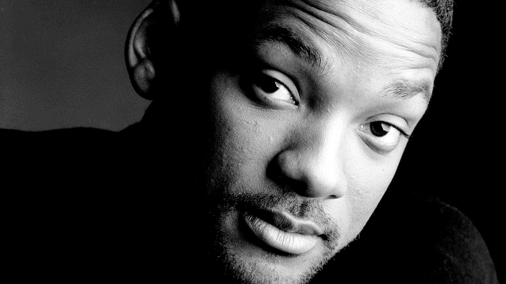

Les débuts dans le rap
Willard Carroll Smith Jr. naît le 25 septembre 1968 à Philadelphie.
Avec DJ Jazzy Jeff, il forme le duo DJ Jazzy Jeff & The Fresh Prince.
En 1989, leur titre « Parents Just Don't Understand » gagne le tout premier Grammy Award du rap.
Le Prince de Bel-Air
De 1990 à 1996, il joue le rôle principal de la série « Le Prince de Bel-Air ».
Grâce à cette dernière, il devient célèbre dans le monde entier.
Star d'Hollywood
Il enchaîne les succès : « Bad Boys », « Independence Day », « Men in Black ».
En 2022, il gagne l'Oscar du meilleur acteur pour « La Méthode Williams ».